Приветствие
Приветствие
📜 За громкими историческими событиями всегда стоит повседневность, а рядом с мужчинами — политиками, учеными и писателями — менее заметные женщины, которые в той же степени были людьми своего времени.
В этом канале вы найдете удивительные истории из повседневной жизни женщин Петербурга XIX - нач. XX вв. самых разных социальных слоев.
📚 Авторы проекта — большие любители книг. Под каждой заметкой мы оставляем источники, которые можно изучить для большего погружения в тему. Цель наших заметок — расширить и актуализировать исторические знания. Каждая из них написана с любовью и большим интересом к предмету.
🏛Источники были предоставлены нашим партнером — Библиотекой им. Маяковского, отделом Петербурговедения.
Дорогие читатели!
Дорогие читатели!
Предлагаем Вам начать наше исследование с близкой и умам, и телу темы – одежды. В период, о котором мы рассказываем, мода была более жестока с женщинами, чем с мужчинами, а модная индустрия только начинала свой расцвет.
Читайте на нашем канале: что носили дамы под платьями, и как им это мешало жить; советы по уходу за собой и красоте из модных журналов Петербурга; известные Петербургские мастера и мастерицы портновского дела и многое другое.
#мода
#красота
#косметика
Затянем потуже
Затянем потуже
Тема женской моды не может обойти вниманием корсет. Его история насчитывает столетия, и на ее протяжении этот предмет гардероба критиковался и вызывал неодобрения. Но, тем не менее, еще в 1910-х гг. дамы носили корсеты.
История корсета в Российской империи началась с Петром Первым, тогда как в Европе к этому времени он давно получил широкое распространение. Корсет в разное время был и совсем короткий, утягивающий только ребра, и доходил до талии, а к 1912 году модный силуэт предполагал и стягивание бедер.
Он мешал, вредил здоровью, но оставался для того, чтобы держать женскую спину (это считалось необходимостью), и как "символ чистоты нравов".
Двигателем изменений в отношениях с корсетом была Франция, и, вслед за ней, после Первой мировой войны в Российской Империи начались отказы от корсета и его трансформации в другие виды гардероба.
Стил, Валери. Корсет. Москва: Новое литературное обозрение, 2010.
Стил, Валери. Корсет. Москва: Новое литературное обозрение, 2010.
#мода
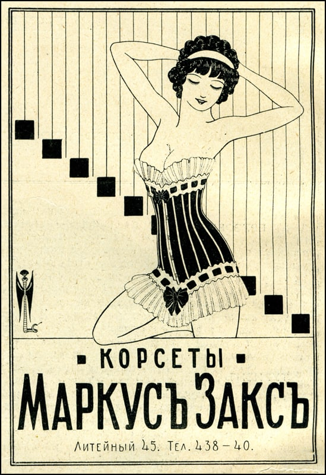
Дорогие читатели!
Дорогие читатели!
Мы не можем пройти мимо такой важной темы как «Салоны»! Ох, как же весела была жизнь, а встречи носили такой светский характер.
Эта рубрика позволит Вам узнать больше о том, как же проводились салоны, кто был завсегдатаем большей части встреч, и что писали гости в альбомах друг друга. Окунёмся же в этот мир вместе!
#салоны
#литература
#музыка
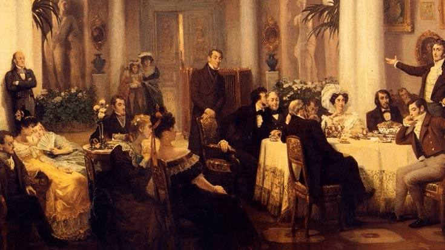
Салоны нннада?
Салоны нннада?
Салон Петербурга XIX - XX веков - это место, где в присутствии хозяйки могли встречаться, общаться и обмениваться мнениями молодые дворяне и влиятельные известные персоны того времени. Салон являлся единственным местом “свободы”, где было возможно отстаивать любые политические и культурные взгляды. В гостиных салона были все равны и чувствовали себя достаточно свободно, несмотря на то, что мнение хозяйки считалось единственно верным и эталонным.
Слово “салон” имеет много значений. Основное значение - большая меблированная гостиная, в которой проводились приемы в присутствии хозяйки. Другой же “салон” - политический, литературный, музыкальный - именно этот прием.
Салон - это не просто гостиная с диваном и большим гостевым столом. Меблировка менялась и усложнялась из года в год. Разнообразие представляли как диванчики - с одной спинкой и двумя сиденьями, кушетка “рекамье”, козетка, угловой диван, диванчик на двоих - secrette и для троих - discrette, - так и столики - бобики, самоварные, раздвижные, с крылышками и с потайными ящичками для дамского рукоделия, почти декоративные письменные столики и др.
В салоне все рассчитано для удобства дамы, ведь это единственное место, где она она имеет власть и может царить. Салон придумали дамы, как обрамление для собственной личности.
Жерихина Е.И. Зимний сезон в салонах Петербурга, 2017.
Жерихина Е.И. Зимний сезон в салонах Петербурга, 2017.
#салоны
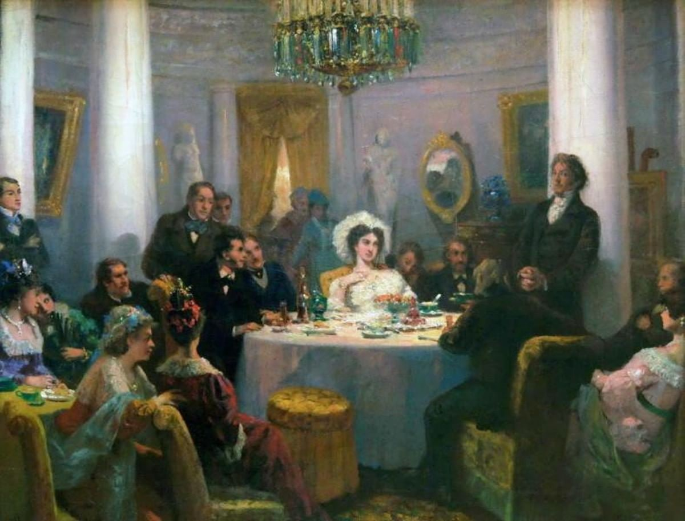
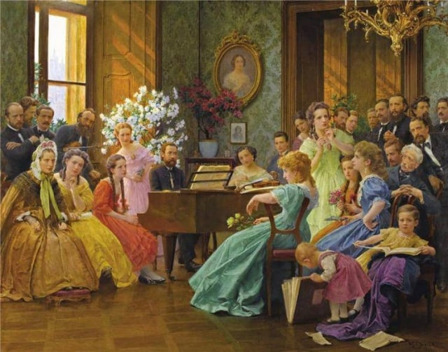
Дорогие читатели!
Дорогие читатели!
Сегодня мы начинаем еще одну линию нашего рассказа, благодаря который вы узнаете о том,
как жили представительницы одной из древнейших профессий
как жили представительницы одной из древнейших профессий
.
Итак! О том, почему публичные женщины были обязаны проходить медосмотр, какой город Российской Империи был рекордсменом по количеству борделей, как жили проститутки-аристократки и о многом другом - читайте на нашем канале.
#история_проституции
Важный исторический момент
Важный исторический момент
В 1843 году в России была
легализована проституция
. Здесь наш читатель может удивиться: как же можно было узаконить такую нравственную патологию? Дело в том, что терпеть тайную проституцию стало просто невозможно - статистика по венерическим заболеваниям ужасала. В результате государство было вынуждено взять преступления чувственности под контроль: 29 мая 1844 года министерством внутренних дел был утвержден документ «Правила для содержательниц домов терпимости», который регулировал организованную форму проституции и представлял собой «обилие советов, имеющих… всякого рода гигиенические требования…». Такой вот оксюморон получился: чтобы победить венерические заболевания, пришлось узаконить деятельность их разносчиц.
Врачебно-полицейский надзор за городской проституцией: в 2 ч. СПб., 1910. Ч. 1. С. 50.
Врачебно-полицейский надзор за городской проституцией: в 2 ч. СПб., 1910. Ч. 1. С. 50.
#история_проституции
Многообразие модных журналов
Многообразие модных журналов
Петербург — бесспорный центр моды Российской империи. Здесь творили известнейшие мастера своего дела, и печатались различные модные журналы. Они просвещали своих читательниц о стекающихся сюда новинках парижской моды, а также бытовых вопросах, вопросах гигиены и здоровья.
Помимо таких привычных для женской периодики тем, журналы помещали в выпуски литературные произведения, рубрики для общения с читательницами. В 1910-х гг. ко всему прочему добавились статьи на тревожащие умы женщин темы, информация о женских курсах. На страницах можно было увидеть также большое количество иллюстраций, выкроек, схем для рукоделия, а также рекламу.
Самый расцвет модных журналов в Петербурге пришелся на конец XIX — начало XX вв. Всего в этот период издавалось около 12 модных журналов.
“Венский шик”
“Вестник моды”
“Парижская мода”
“Модный свет и модный магазин”
“Модный курьер”
“Новый русский базар”
“Новейшие моды мужских платьев”
“Модистка. Модели шляп, головных уборов и украшений”
“Парижские модели шляп”
“Детские платья и белье”
А также приложения к семейным журналам:
“Новые моды и рукоделия”
“Новейшие моды”
“Парижские моды, хозяйство и домоводство”
Кристин Руан. Новое платье империи: История Российской модной индустрии.
Кристин Руан. Новое платье империи: История Российской модной индустрии.
#мода
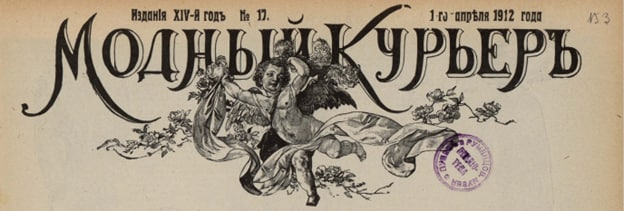

Потонувший мир Петербурга
Потонувший мир Петербурга
Санкт-Петербург конца XIX - начала ХХ веков невозможно представить без салонов. Традиция салонов продолжалась вплоть до 1918 года и начала возрождаться в 1990-е гг.
Один из популярнейших салонов начала XX века - салон Марии Эдуардовны Клейнмихель. Салон М.Э. Клейнмихель собирал блестящее общество.
“Дипломаты находили гостеприимство у графини Клейнмихель, рожденной графини Келлер, в ее доме на Сергиевской. У нее, конечно, не было той роскоши, как у Белосельских и Орловых, но ум и привлекательность хозяйки давали возможность не без успеха конкурировать с ними” - считал начальник канцелярии Министерства императорского двора генерал А.А. Мосолов.
После революции Мария Эдуардовна решила покинуть Россию, на тот момент ей было 72 года. В своей эмиграции М.Э. Клейнмихель писала мемуары о своей петербургской жизни, которые были изданы в Берлине в 1922 году. А в 1923 году ее книга “Из потонувшего мира” была издана и в Петербурге.
Юкина И.И., Гусева Ю.Е. Женский Петербург: Опыт историко-краеведческого путеводителя, 2004.
Юкина И.И., Гусева Ю.Е. Женский Петербург: Опыт историко-краеведческого путеводителя, 2004.
#салоны
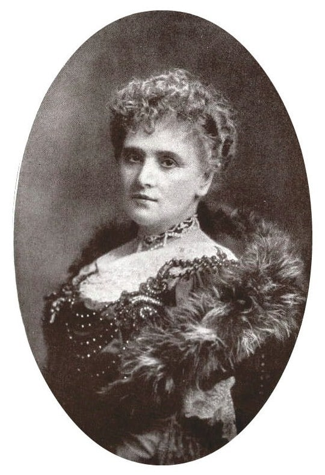
Комитет камелий
Комитет камелий
Важную роль в легализации проституции сыграл созданный в 1843 году
Врачебно-полицейский комитет
, служащие которого не только занимались законотворчеством в области продажной любви, но и осуществляли надзорную деятельность. По состоянию на 1851 год многогранная деятельность комитета включала в себя следующие направления (в порядке важности):
«составление списков публичных женщин»;
«врачебное освидетельствование этих женщин»;
«лечение выявленных больных»;
«выяснение у больных мужчин, где заразились»;
осмотр «на предмет болезней всех задержанных полицией представителей низших классов».
Лебина Н. Б., Шкаровский М. В. Проституция в Петербурге (40-е гг. XIX в. — 40-е гг. XX в.).
Лебина Н. Б., Шкаровский М. В. Проституция в Петербурге (40-е гг. XIX в. — 40-е гг. XX в.).
#история_проституции
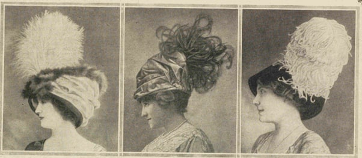
Человек познается по тому, в каком состоянии он держит свою шляпу
Человек познается по тому, в каком состоянии он держит свою шляпу
Такой мало распространённый ныне и такой необходимый еще чуть более 100 лет назад аксессуар как шляпа являлся предметом гордости для модниц, но также и предметом особых забот и ухода.
Шляпа не только делала образ цельным, но и находилась близко к лицу. Поэтому к выбору шляпки относились с особой внимательностью. Советы по уходу за шляпами передавались от одной барышни к другой, а также печатались в модных журналах.
Покупая шляпу, нужно обращать внимание не только на ее внешний вид. Следует следить, чтобы лента подклады, которая соприкасается со лбом, была белая или коричневая: всякая другая окраска получается с помощью анилиновых красок и может вызывать сыпь, а иногда и мигрени.
Шляпы сильно портятся от помады и различных косметических кремов. Чтобы вывести эти жирные пятна, надо их смочить несколькими каплями прованского масла. А затем щедро посыпать поглощающей жир глиной: трубочной, сукновальной, или мылом, магнезией если шляпа белого цвета.
Хьюз, Клэр. Шляпы
Хьюз, Клэр. Шляпы
#мода
Princesse nocturne
Princesse nocturne
На Миллионной улице в конце XIX века проходили самые интригующие салоны. А проводила их княгиня Е.И. Голицына, которая за свою любовь к ночным салонам стала известна в светских кругах Петербурга как “принцесса ночи” (princesse nocturne).
Такой “титул” княгиня получила за то, что ее салоны проводились исключительно в ночное время суток. Таким образом княгиня хотела обойти пророчество цыганки, которое гласило, что Е.И. Голицына умрет ночью.
Несмотря на это, княгиня была очень образованным человеком - изучала философию и математику. Однако, характер она имела скверный.
Е.И. Голицына отстаивала все русское и “боролась” с картофелем, считая его слишком немецким овощем.
Салоны княгини Е.И. Голицыной славились на весь Петербург, а ее постоянными гостями были князь П.А Вяземский, А.С. Грибоедов, В.А. Жуковский, А.С. Пушкин и др. По словам Карамзина, стихотворения Пушкина “Краев чужих неопытный любитель...” и “Простой воспитанник природы...” были посвящены именно Е.И. Голицыной.
Юкина И.И., Гусева Ю.Е. Женский Петербург: Опыт историко-краеведческого путеводителя, 2004.
Юкина И.И., Гусева Ю.Е. Женский Петербург: Опыт историко-краеведческого путеводителя, 2004.
#салоны

Пробелы в законодательстве
Пробелы в законодательстве
Интересно, что
создание Врачебно-полицейского комитета противоречило действующему законодательству
, которое предусматривало наказание за открытие публичного дома (сначала в виде штрафа, затем тюремного заключения от 6 месяцев до 1 года) и наказание «за обращение непотребства в ремесло» (в виде ареста от 7 дней до 3 месяцев). Чиновники, предвидя данный юридический нонсенс, неоднократно обращались к Николаю I с просьбой о смягчении преследования проституции. Предполагается, что это ходатайство было негласно удовлетворено. Однако закрепленная российским законодательством ответственность за торговлю любовью формально просуществовала почти до конца XIX века и лишь в 1891 году наказание за превращение «непотребства» в ремесло заменили ответственностью за несоблюдение правил о регистрации проституток.
Лебина Н. Б., Шкаровский М. В. Проституция в Петербурге (40-е гг. XIX в. — 40-е гг. XX в.).
Лебина Н. Б., Шкаровский М. В. Проституция в Петербурге (40-е гг. XIX в. — 40-е гг. XX в.).
#история_проституции
Жемчужины во рту
Жемчужины во рту
Может показаться странным, но белизна зубов не всегда была обязательным требованием для красавицы. Еще в начале прошлого века, например, восточные женщины предпочитали намеренно их чернить.
В допетровской Руси также существовала мода на черные зубы, что, вероятно, было связано еще и с воздействиями вредных веществ, которые женщины использовали как декоративную косметику.
Вопросы гигиены зубов всегда стояли довольно остро. Еще в середине XIX века было принято чистить зубы табаком, а его курение, как считалось, помогало от зубной боли.
Но время шло, и девушки ближе к концу девятнадцатого века предпочитали тщательно ухаживать за своими зубами.
Вот, например, некоторые советы по уходу из книги 1912 г.:
— Посещать хорошего дантиста.
— Не есть ничего слишком сладкого, слишком кислого, слишком горячего, слишком холодного.
— Использовать шелковую нить.
И зубной порошок, и ополаскиватель возможно приготовить в домашних условиях. Для изготовления порошка использовалась сода, корица и масло корицы, а состав для полоскания делался на основе воды с добавлением мела, марсельского мыла, бора и настоя гвоздики.
Б. Забозлаева. Мода как политика в Российской империи
Б. Забозлаева. Мода как политика в Российской империи
#косметика
#красота
#мода
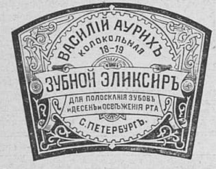
Хозяйка обедов в “Современнике”
Хозяйка обедов в “Современнике”
Самым известным литературным салоном конца XIX века был салон Авдотьи Яковлевны Панаевой (Головачевой). Салон находился в редакции журнала “Современник” и устраивался по случаю выхода каждого номера журнала. На встречах собирались не только литераторы, но и государственные “чиновники от литературы”, от которых зависела судьба “Современника”.
Хозяйка салона в “Современнике” имела не меньшее влияние на жизнь журнала, чем непосредственные руководители редакции. Авдотья Яковлевна принимала активное участие и в роли автора. Она писала романы, повести, очерки и воспоминания под псевдонимом Станицкий.
А.Я. Панаева считалась одной из самых обаятельных и умных хозяек салонов Петербурга. Ее красотой восхищались В.А. Сологуб, Н.Г. Чернышевский и Ф.М. Достоевский. О ее уме и проницательности писали А.И. Герцен и В.Г. Грановский.
Влияние А.Я. Панаевой на развитие русской литературы и журналистики является неоспоримым фактом. Исследовавший творчество Некрасова Н.Н. Скатов писал, что “еще не известно, как развивалась бы литература и журналистика, если бы не “хозяйка некрасовских обедов”, обаянием и дипломатичностью которой не раз пользовались Некрасов и Панаев, поручая ей все дипломатические вопросы.
Юкина И.И., Гусева Ю.Е. Женский Петербург: Опыт историко-краеведческого путеводителя, 2004.
Юкина И.И., Гусева Ю.Е. Женский Петербург: Опыт историко-краеведческого путеводителя, 2004.
#салоны
#литература
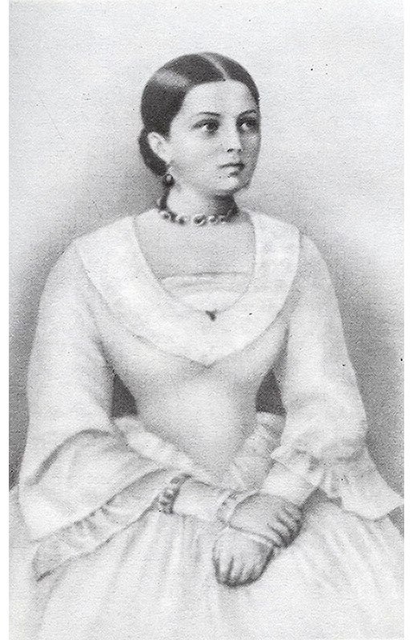
Вакансия: содержательница борделя
Вакансия: содержательница борделя
Легализация проституции в России регламентировала и деятельность тружениц любовного фронта, и деятельность их начальства. Однако, в отличие от проституток, предписания в отношении которых ограничивались в основном тщательнейшим соблюдением личной гигиены,
руководящее звено любовного бизнеса обязывалось следовать широкому перечню указаний
:
1) бордели открывать не иначе, как с разрешения полиции;
2) разрешение открыть бордель может получить только женщина средних лет, от 30 до 60 лет;
3) в число женщин в борделях не принимать моложе 16 лет;
4) на каждую принятую содержательница должна заводить особый «медицинский билет» для предъявления клиентам «как удостоверение о состоянии их здоровья»;
5) содержательница борделя, при получении разрешения, обязывается подпискою в том, что будет соблюдать все относящиеся к здоровью женщин правила;
6) в определенный врачом день посещения содержательница обязана представить ему к свидетельству всех женщин своего борделя, с итоговой отметкой cостояния здоровья их на медицинских билетах;
7) независимо от свидетельствования женщин врачами, содержательница обязывается осматривать состоящих в ее борделе сама, каждый день, и заболевших отсылать тотчас же в особую женскую больницу;
8) укрывательство проституток с венерическими заболеваниями грозит содержательнице борделя отбыванием заключения в тюремном заведении;
9) кровати в борделе должны быть отделены легкими перегородками или при невозможности сего по обстоятельствам ширмами с дополнительным сохранением возможной благопристойности и особенно чистоты;
10) содержательница обязывается следить за тем, чтобы путаны как можно чаще обмывали холодной водой известные части, и особенно, чтобы девки употребляемые не переходили тотчас же к другим посетителям не обмывшись - и если можно переменяли бы белье;
11) cодержательница подвергается строгой ответственности за доведение живущих у нее девок до крайнего изнурения неумеренным употреблением;
12) содержательница обязана удерживать женщин своих от излишнего употребления крепких напитков;
13) мужчин несовершеннолетних, равно воспитанников учебных заведений, ни в коем случае не допускать в бордели;
14) по воскресным и праздничным дням принимать посетителей до окончания обедни строго запрещается.
Сборник правительственных распоряжений, касающихся мер предупреждения распространения любострастной болезни. СПб. С. 35–39.
Сборник правительственных распоряжений, касающихся мер предупреждения распространения любострастной болезни. СПб. С. 35–39.
#история_проституции
По магазинам
По магазинам
Петербург с начала XIX в. был центром и образцом розничной торговли для всей империи.
Спрос на европейскую одежду и аксессуары отражался и на вывесках многочисленных магазинов: многие из них были на французском и немецком языках. Только в 1897 г. правительство выпустило указ, по которому владельцы были обязаны переводить вывески на русский язык.
Универсальные магазины предлагали большое количество различных товаров, а также приглашали полюбоваться на красочные витрины. Все эти процессы говорили о демократизации моды и торговли: теперь доступ к модным туалетам имели не только дамы высших сословий.
А те, кто не мог позволить себе отовариваться в западных магазинах, посещали торговые ряды. В Петербурге самым известным был, конечно же, Гостиный двор. Еще более доступными по цене были подержанные платья в ломбардах и у других перекупщиков.
Кристин Руан. Новое платье империи: История Российской модной индустрии.
Кристин Руан. Новое платье империи: История Российской модной индустрии.
#мода
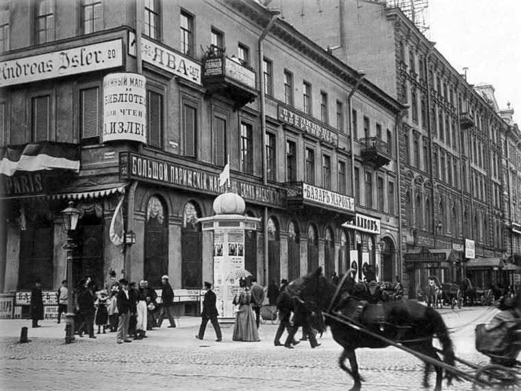
Альбом, да не для тебя
Альбом, да не для тебя
В XIX веке в петербургских литературных, и не только, салонах стал популярен Альбом. Он представлял собой книгу с портретом хозяйки салона или посвятительной надписью хозяевам дома, в которой посетители салона записывали или зарисовывали свои заранее приготовленные экспромты. Альбом каждый день наполнялся большим количеством мадригалов, посланий и экспромтов.
Альбомные стихи были льстивы, благодаря чему служили билетом на следующую встречу. Однако, хозяйки салонов - интеллектуалки не уважали такое творчество, и их Альбомы превращались в “выставку знаменитостей”. Эти дамы обожали философские стихи, но с оттенком обожания, на которое они рассчитывали. Иногда дамы становились хозяйками Альбомов, составленных выдающимися поэтами и писателями. Альбом представлял законченное художественное произведение.
Таким образом появился особые виды “альбомного рисунка” и “альбомного стихотворения”, которые достаточно быстро выродились и стали источники насмешек и издевательств. Альбомы светских карикатуристов стали популярны и “ходили по рукам”, их специально доставали и передавали друг другу.
Также Альбом украшали рисунки выдающихся художников и стихотворения лучших поэтов. Наиболее известными из подобных Альбомов стали “Розовопавильонный альбом” императрицы Марии Федоровны, в котором находились стихотворения В.А. Жуковского и И.А. Крылова, и Альбомы А.Н. Оленина и С.Д. Пономаревой,с рисунками О.А. Кипренского и стихотворениями В.А. Жуковского.
Юкина И.И., Гусева Ю.Е. Женский Петербург: Опыт историко-краеведческого путеводителя, 2004.
Юкина И.И., Гусева Ю.Е. Женский Петербург: Опыт историко-краеведческого путеводителя, 2004.
#салоны
#литература
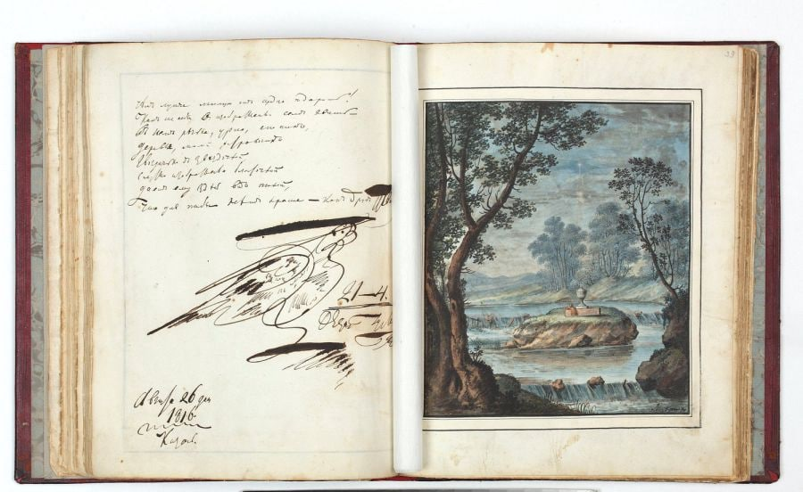
Против сутенерского произвола
Против сутенерского произвола
Несмотря на то, что деятельность борделей находилась под чутким покровительством закона, хозяйки публичных домов, пользуясь сложившимися в русском обществе стереотипам о публичных женщинах как о едва ли имеющих право называться человеком, безжалостно обирали этих жертв собственного неведения и ставили их в рабское положение.
Содержательницы борделей зачастую полностью присваивали себе заработок проститутки
, в том числе посредством продажи ей необходимых предметов одежды и гигиены по тройным ценам. Чтобы как-то контролировать сложившуюся ситуацию, в 1856 году Врачебно-полицейский комитет ввел в борделях расчетные книжки.
Лебина Н. Б., Шкаровский М. В. Проституция в Петербурге (40-е гг. XIX в. — 40-е гг. XX в.).
Лебина Н. Б., Шкаровский М. В. Проституция в Петербурге (40-е гг. XIX в. — 40-е гг. XX в.).
#история_проституции
Высший свет в Петербурге душился неистово, со страстью
Высший свет в Петербурге душился неистово, со страстью
В XIX в. среди высшей знати духи были признаком благосостояния и вкуса. Яркие ароматы не только носились на себе, было также принято окуривать комнаты. От сильных запахов часто кружилась голова и ухудшалось самочувствие. Комнаты окуривали и уксусом с мятой, и одеколоном. В обществе и прессе делились многочисленными рецептами для изготовления пахучих эссенций на основе спирта.
Какими известными ароматами пользовались дамы?
К 300-летию Романовых парфюмер Генрих Брокар выпустил в свет духи, называвшиеся “Любимый букет императрицы”, впоследствии известные как “Красная Москва”.
В годовщину Отечественной войны товарищество А. Ралле и К. выпустило духи под названием “Букет Наполеона”.
Б. Забозлаева. Мода как политика в Российской империи
Б. Забозлаева. Мода как политика в Российской империи
#красота
#косметика
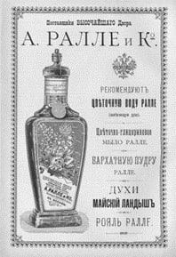
Дорогие читатели!
Дорогие читатели!
Ощущаете нечто… мистическое? Нет? Тогда Они уже идут к Вам...
Надеемся, Вы готовы погрузиться в мир городских легенд и мифов. Приготовьтесь бояться.
Для нас было удивлением, что Петербург усеян таким большим количеством женщин-призраков. В этом разделе Вы узнаете о самых страшных легендах и о том, куда Вам лучше не ходить, дабы не встретить (не)живых жительниц Петербурга.
#призраки
Мария, не пугай!
Мария, не пугай!
Первая красавица Петербурга Мария Гамильтон, происходившая из ветви шотландского рода, практически сразу по приезде в Петербург стала любовницей Петра I. Однако, ни о какой любви речи не шло, и интерес императора прошел достаточно быстро.
После этого Мария завела роман с императорским денщиком Иваном Михайловичем Орловым. От Орлова Гамильтон была беременна три раза. Двоих своих детей она вытравила, а третьего собственноручно убила. Узнав об этом, Петр I по закону должен был приказать «закапывать в землю по титьки, с руками вместе и отоптывать ногами». Однако, император решил смягчить наказание. Мария Гамильтон была обезглавлена. И.Б. Шерер вспоминал момент после казни Гамильтон: “Когда топор сделал свое дело, царь возвратился, поднял упавшую в грязь окровавленную голову и спокойно начал читать лекцию по анатомии, называя присутствовавшим все затронутые топором органы и настаивая на рассечении позвоночника. Окончив, он прикоснулся губами к побледневшим устам, которые некогда покрывал совсем иными поцелуями, бросил голову Марии, перекрестился и удалился”.
Голова Марии Гамильтон долгое время хранилась в Кунсткамере после чего неожиданно исчезла. Сама же Мария долгое время являлась во снах к Екатерине II и просила успокоения. Екатерина II решила исполнить просьбу Гамильтон и похоронила ее голову.
Андреева Ю.И. Призраки мрачного Петербурга, 2018.
Андреева Ю.И. Призраки мрачного Петербурга, 2018.
#призраки
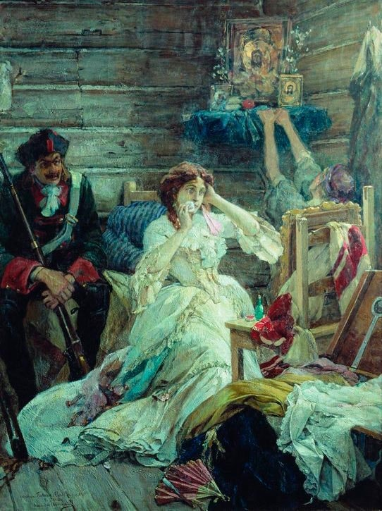
Бордель на колесах
Бордель на колесах
Некоторые публичные дома, желая расширить географию своих клиентов, участвовали в ярмарках. К примеру, на Коренской ярмарке, неподалеку от Курска, в 1863 году действовало 12 публичных домов с 49 проститутками. Публичные дома, выезжающие на ярмарки, были представлены из разных городов - из Орла, Полтавы, Сум и Курска, а некоторые из них вообще не имели географической привязки и странствовали по ярмаркам круглый год.
Ярмарочные публичные дома назывались «кофейнями» и облагались налогами как увеселительные заведения
: в 1863 году местный налог за «право промысла» составил 263 рубля.
Труды Курского городского статистического комитета. Вып. 2. Курск, 1866.
Труды Курского городского статистического комитета. Вып. 2. Курск, 1866.
#история_проституции
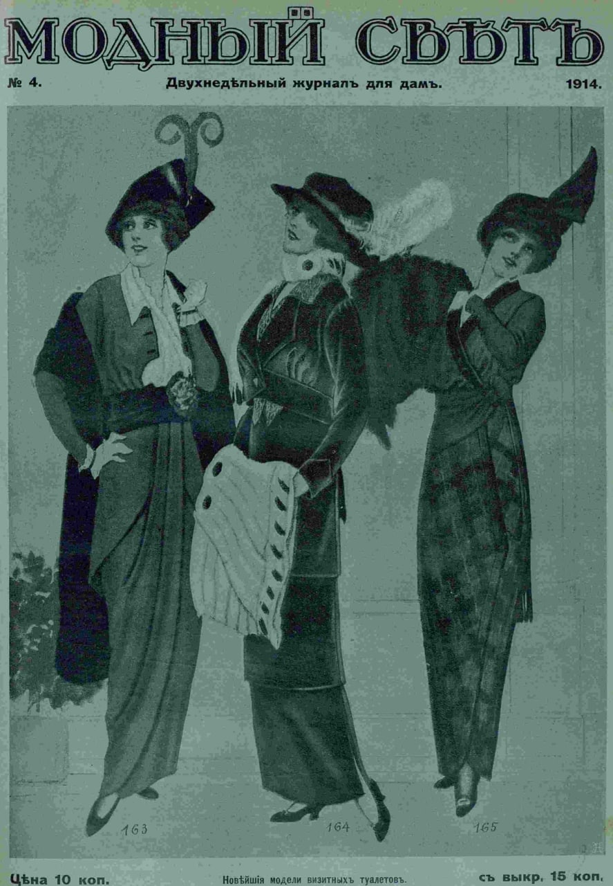
Красота и худоба
Красота и худоба
Прижившаяся и всеми признавшаяся формула “кровь с молоком” в отношении женской красоты пошатнулась в петровскую эпоху, когда русские красавицы впервые столкнулись с критикой иностранных гостей в отношении своей комплекции. Сильно модный образ тела это не изменило, но уже в начале XIX века хрупкие барышни стали все более и более привлекать внимание. Вкупе с бледностью лица популярность стал приобретать болезненный внешний вид.
“Борьба с тучностью” предполагала, помимо прочего, занятия спортом, длительные пешие прогулки. Считалось, что свежий воздух сжигает жир.
Например, Мария Федоровна “предпринимала двухчасовые пешие прогулки по Павловскому парку, чтобы уменьшить свои габариты”. В модных журналах начала XX в. печатались рекламы слабительных средств, которые, помимо прочего, должны были помогать при ожирении.
Б. Забозлаева. Мода как политика в Российской империи
Б. Забозлаева. Мода как политика в Российской империи
#красота
Анна Иоанновна на прогулке
Анна Иоанновна на прогулке
Эта история произошла ночью. Анну Иоанновну, как и каждым прошлым вечером, раздели, уложили в постель, после чего царица уснула. Но не все так спокойно было этой ночью!
В тронном зале был выставлен дежурный караул, который в полночь сменился. Через некоторое время в тронный зал вошла дама. Дама была одета, причесана весьма торжественно. Приглядевшись к даме солдаты узнали в ней Анну Иоанновну, чему очень удивились, ведь царица спала, рядом с ней не было фрейлин!
Солдаты решили обратиться за помощью к Э.И. Бирону, который был фаворитом Анны Иоанновны, однако тот утверждал, что только что был у царицы, и она спит. Несмотря на это, Бирон решил сам посмотреть на женщину в тронном зале. Дама была очень похожа на зеркальное отражение императрицы. Бирон принял решение разбудить “оригинальную” императрицу.
Надев халат, Анна Иоанновна решила лично посмотреть в глаза самозванке. Самозванка, увидев императрицу, улыбнулась и села на трон, а через некоторое время исчезла.
Императрица произнесла: “Это моя смерть”. Через два дня императрица скончалась.
Андреева Ю.И. Призраки мрачного Петербурга, 2018.
Андреева Ю.И. Призраки мрачного Петербурга, 2018.
#призраки
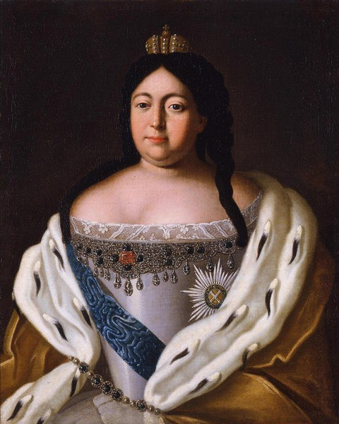
Налоговые каникулы
Налоговые каникулы
Финансовые отношения государства с институтами проституции можно было назвать нравственно-альтруистическими.
Хозяйки борделей были освобождены от налогов
и вносили плату только за организацию медицинских осмотров. Представитель Врачебно-полицейского комитета, пожелавший остаться неизвестным, писал в 1868 году: «Плата… непременно сделает то, что она (хозяйка борделя) сравняет свое занятие с различными промыслами и не будет видеть в нем ничего постыдного… лучше увеличить налог с кабаков». Таким образом, государство осуществляло надзор за проституцией не из корыстных побуждений, а с благой целью оздоровления нации.
Лебина Н. Б., Шкаровский М. В. Проституция в Петербурге (40-е гг. XIX в. — 40-е гг. XX в.).
Лебина Н. Б., Шкаровский М. В. Проституция в Петербурге (40-е гг. XIX в. — 40-е гг. XX в.).
#история_проституции

Страсть к покупкам
Страсть к покупкам
Разнообразие мужских мод всегда уступало женским: мужчинам приходилось одеваться в одежду, подходящую требованиям каждого рода службы. Женщины же, особенно те, кто стремился одеваться по моде, светские дамы, меняли наряды по нескольку раз за день. Сколько времени и энергии тратилось на одевание!
Хождение по магазинам представлял собой особый ритуал, включающий в себя не только саму покупку, но еще и прогулку, которую дамы совершали для того, чтобы на других посмотреть и себя показать.
С развитием рекламы женщины стали покупать все больше и больше, “роль женщин как потребителей свидетельствовала о высоком статусе их мужей”. Наряд дамы — полное отражение благосостояния ее мужа.
В начале XX в. многие мужчины стали выражать недовольство сложившейся системе потребления, виня моду, в том числе, в семейных проблемах (Елец, Ю.Л. Повальное безумие (К свержению ига мод), 1914 г.). К этому времени к страсти к покупкам приобщились и работающие женщины.
Кристин Руан. Новое платье империи: История Российской модной индустрии.
Кристин Руан. Новое платье империи: История Российской модной индустрии.
#мода
Огонь по “липе”!
Огонь по “липе”!
Однажды ночью слуги императрицы Екатерины II всполошились. А ведь была на то веская причина! Императрица, вместо того, чтобы спокойно спать в своей постели, зашла в тронный зал! Да как зашла… в торжественных одеяниях! Придворные дамы были в дичайшем ужасе, ведь императрица никак не могла надеть этот наряд, а уж тем более сделать такую прическу без их помощи. Не поверив этому, дамы бросились в покои императрицы, чтобы ее разбудить.
Екатерина Великая вошла в тронный зал. Увидев двойника, императрица приказала страже открыть огонь по неизвестной. Нарядная императрица спокойно выдержала весь огонь и лишь улыбалась всему этому мероприятию, после чего так же неожиданно исчезла.
Эта встреча с двойником стала для Екатерины Великой роковой. Вскоре она скончалась.
Андреева Ю.И. Призраки мрачного Петербурга, 2018.
Андреева Ю.И. Призраки мрачного Петербурга, 2018.
#призраки
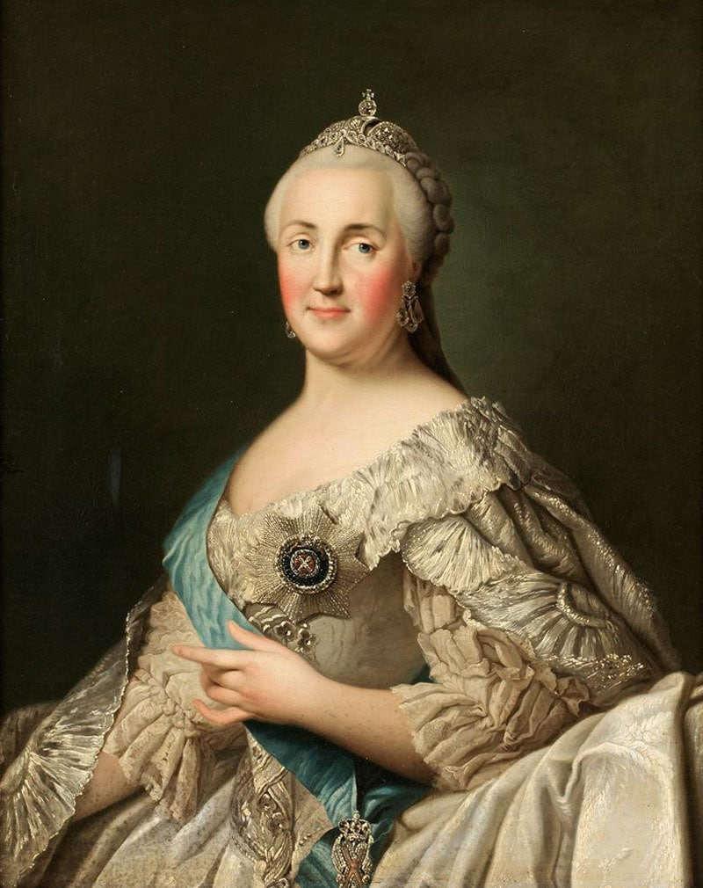
Пятизвездочные бордели
Пятизвездочные бордели
На первых порах легализация проституции повлекла за собой широкое распространение этого вида деятельности. Если в 1843 году Врачебно-полицейский комитет выявил в Петербурге 400 женщин, занимавшихся проституцией, то к 1852 году их количество возросло до 884, а к 1879 году - до 1528. В результате рос и
ассортимент борделей
- от самых дешевых до элитных.
Одним из самых доступных публичных домов был «Малинник» на Сенной. Яркое описание этого заведения дал В. В. Крестовский в документальном романе «Петербургские трущобы»: «Смрад, удушливая прелость, отсутствие света и убийственная сырость наполняют эти норы… Но если что и производит на душу невыносимо тяжелое впечатление, то это женщины, гнездящиеся в малинникском заведении». Цена на услуги малиннинских дам не превышала 50 копеек, поэтому работали они на износ: в праздничные дни проститутки из «Малинника» обслуживали по 50 человек.
Существовали и дорогие бордели. Сеанс там обходился в 3-5 рублей, ночь - в 5-15 рублей, обслуживание клиента вне борделя - до 25 рублей. Стоит отметить, что такие цены были весьма оправданы. Во-первых, хозяйки борделей премиум-класса не скупились на интерьеры. В середине 80-х годов хозяйка одного из таких заведений потратила 7 тысяч рублей на оборудование зеркального зала для «особых случаев». Во-вторых, интерьеру соответствовали и женщины. В дорогих публичных домах «работали» в основном иностранки: немки, голландки, француженки. Встречались даже японки, они отличались особой чистоплотностью и примерным поведением.
Лебина Н. Б., Шкаровский М. В. Проституция в Петербурге (40-е гг. XIX в. — 40-е гг. XX в.).
Лебина Н. Б., Шкаровский М. В. Проституция в Петербурге (40-е гг. XIX в. — 40-е гг. XX в.).
#история_проституции
Хорошенькие ручки одерживают почти столько же побед над сердцами мужчин, как и хорошенькие личики
Хорошенькие ручки одерживают почти столько же побед над сердцами мужчин, как и хорошенькие личики
… пишут модные журналы начала XX века. К этому времени почти отказались от ношения перчаток, хотя еще какие-то десятилетия назад нельзя было выйти без изящной пары перчаток, не говоря уже о том, чтобы отправиться без них на бал.
Ухоженные руки всегда были отличительной чертой аристократа, будь то мужчина или женщина. Перчатки — одно из средств для защиты рук от различных воздействий среды. Другим средством являлся, конечно же, отказ от работы руками.
Красивыми дамскими руками считались не столько маленькие и изящные, сколько белые, мягкие и с розовыми ногтями.
Правила ухода за ногтями предполагали целый свод систематических указаний. Специальный набор для ухода содержал около 13 предметов, различных щипчиков, ножниц и пилок. Для сохранения мягкости рук дамы надевали на ночь перчатки, предварительно смазав руки специальными маслами или кремом. Для защиты кожи рук от сухости воды предлагали мыть руки в размягченной нашатырем воде.
Б. Забозлаева. Мода как политика в Российской империи
Б. Забозлаева. Мода как политика в Российской империи
#красота
#косметика
Дорогие читатели!
Дорогие читатели!
Литература конца XIX-начала XX веков заслуженно считается временем зарождения новых художественных систем, появление которых кардинально пошатнуло литературное общество.
Российская литература в этот период оказывала влияние на литературы других стран как запада, так и востока.
Мы предлагаем Вам проникнуться пафосом российской литературы и особым интересом писателей к вопросам общественной жизни конца XIX - начала XX вв. в нашем разделе, посвященном литературе.
#литература
Книжная лихорадка
Книжная лихорадка
В начале XX века общество Петербурга было охвачено радостной лихорадкой из-за возможности публиковать и читать абсолютно любую литературу. Печатная продукция хлынула на людей таким потоком, что газетные обозреватели замечали: “Книжный поток превратился в книжное наводнение”. Все чаще в городе можно было увидеть людей, склонившихся над книгами! К примеру, было возможно опубликовать даже тайные записи по поводу убийства Павла I.
В 1905-1907 гг. выходило немыслимое количество книг для Петербурга XX века - около 130-150 миллионов книг ежегодно! Среди литературы было много книг, связанных с политикой, с различными сферами науки, в связи с чем появилась возможность заниматься самообразованием при помощи этих книг. После 1907 года произошло резкое сокращение выпускаемых книг в связи с перенасыщением рынка и политической обстановкой в стране. Теперь наиболее популярными стали произведения порнографического характера и детективы.
Муравьева И.А. Век модерна: Панорама столичной жизни. Т. 2, 2004.
Муравьева И.А. Век модерна: Панорама столичной жизни. Т. 2, 2004.
#литература
Проститутки-аристократки
Проститутки-аристократки
Что же выделяло сотрудниц элитных публичных домов?
В первую очередь, одежда. К примеру, в некоторых заведениях доминировал «национальный стиль»: можно было провести ночь с женщиной переодетой в грузинскую княжну, страстную испанку или простую русскую красавицу. Другие публичные дома завлекали посетителей париками и кринолинами. Существовал даже публичный дом, в котором сотрудницы наряжались в подвенечные платья и фату.
Важным атрибутом «проституток-аристократок», как ни парадоксально, было образование.
Удивительно, но многие образованные девушки сознательно выбирали бордельную карьеру. К примеру, в одном из трудов журналиста Б.И. Бентовина описана некая Генриетта: 21-летняя, свободно говорившая на французском, немецком, итальянском языках, женщина с очень властным и сильным характером, считавшая проституцию нормальным занятием. По словам Генриетты, «каждый выбирает себе тот труд, который ему больше подходит».
Работниц элитных публичных домов выделяла и
высокая сознательность
. Например, в 1910 году труженицы ряда публичных домов премиум-класса обратились к Первому Всероссийскому съезду по борьбе с торгом женщинами с просьбой ввести обязательный медосмотр посетителей публичных домов: «Мы ведь тоже люди, здоровье нам дорого, и старость наша и без того не сладка. Посетители не лучше нас, участвуя в этом деле. Авось найдутся добрые люди, которые поймут, что губить нам в молодые годы свое здоровье тоже горько и обидно, что все только с одной стороны требуется, только с нас. Просим убедительно и об нас позаботиться».
Лебина Н. Б., Шкаровский М. В. Проституция в Петербурге (40-е гг. XIX в. — 40-е гг. XX в.).
Лебина Н. Б., Шкаровский М. В. Проституция в Петербурге (40-е гг. XIX в. — 40-е гг. XX в.).
#история_проституции
Спорт на открытом воздухе
Спорт на открытом воздухе
Теннис, который в то время проводился на лужайке и оттого звался лаун-теннис, быстро и верно завоевал популярность в Петербурге в конце XIX в. Игры проводились на базе крикет клуба. Первый теннисный клуб открылся в Российской империи в Лахте в 1888 г., а в 1909 начал создаваться клуб игроков в теннис в Гатчине, покровителем которого стала княгиня Виктория Федоровна.
Женщины активно приобщались к этому движению. Среди известных на всю страну теннисисток была, например, Наталья Сиверс.
Модные журналы делились иллюстрациями и выкройками нарядов специально для игры в лаун-теннис.
Женщины считались не только равными мужчинам в этой игре, но и превосходили из в изящности и легкости техники. Был учрежден также “всероссийский дамский чемпионат”.
Глезеров С. Е. Модные увлечения блистательного Петербурга. Кумиры. Рекорды. Курьезы
Глезеров С. Е. Модные увлечения блистательного Петербурга. Кумиры. Рекорды. Курьезы
#увлечения
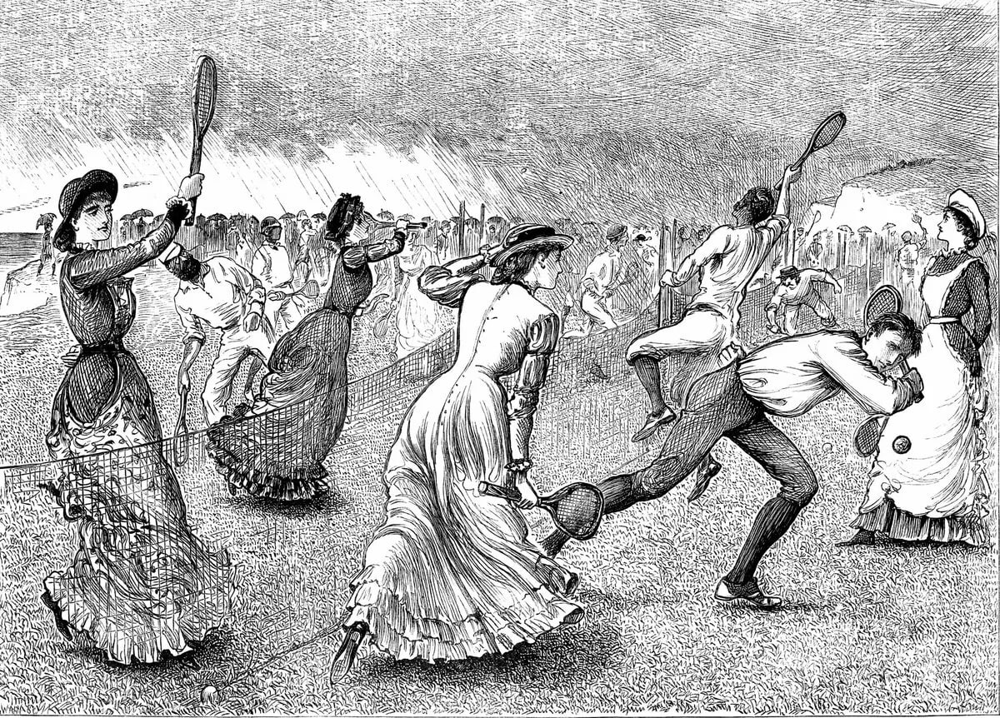
Из воспоминаний А.В. Старчевского “Дом Майковых”
Из воспоминаний А.В. Старчевского “Дом Майковых”
Дворянский род Майковых собирал у себя достаточно много знаменитых товарищей. Среди всех особо выделялись прекрасные представительницы этого рода - Евгения Петровна, Софья Михайловна и Екатерина Павловна. Все три дамы были очень образованы, знали несколько языков и занимались как переводами текстов, так и созданием собственных.
“На другой день я явился в семь часов к Майковым и застал там всех наших знакомых. Спустя четверть часа Ив. Ал. начал читать свою повесть. Все мы слушали ее со вниманием. Язык у него хорош; она написана очень очень легко, и до чаю прочитано им было порядочно. Когда разнесли чай, начались замечания, но они были незначительны и несущественны. Вообще повесть произвела хорошее впечатление. Чтение продолжалось несколько вечеров сряду и по мере ближайшего знакомства с повестью развивался и интерес, все яснее и яснее выходили лица. Конечно, замысел ее незатейлив, ничего сложного и запутанного не было, но по мере ближайшего знакомства с действующими лицами все чаще и чаще становились замечания; но это были замечания слишком молодых и неопытных еще людей; дамы тоже делали эти замечания и свои вставки, также не имевшие никакого критического значения; старики вовсе не высказывались.
Жаль, что тогда среди нас не было ни одного человека с опытом и авторитетом, который знал бы, на что следовало обратить внимание, что изменить, сократить или развить”.
Литературные салоны и кружки. Первая половина XiX века. Под ред. Н.Л. Бродского, 1930.
Литературные салоны и кружки. Первая половина XiX века. Под ред. Н.Л. Бродского, 1930.
#литература
#салоны
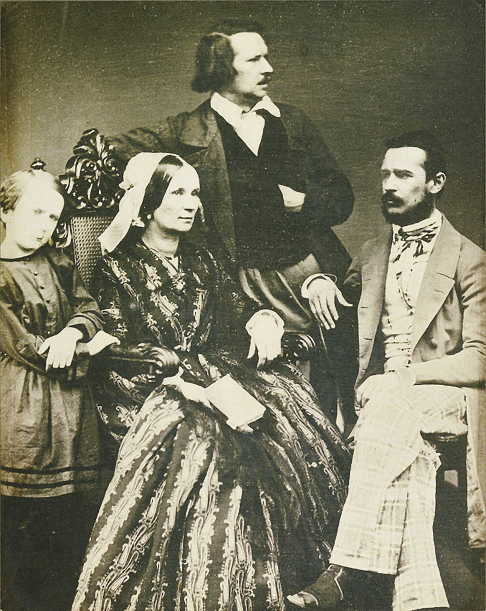
Славный путь
Славный путь
С проститутками-аристократками разобрались - переходим к «дочерям нищеты и несчастья». Вниманию наших усердных читателей мы представляем
данные относительно рода занятий, предшествовавших занятию развратом
.
Итак, несложно заметить, что состав петербургской проституции в основном пополнялся за счет домашней прислуги. Это, впрочем, неудивительно: в служанки, горничные и няньки часто шли одинокие представительницы низших сословий, лишенные возможности выбирать способ заработка.
Михневич В.О. Язвы Петербурга.
Михневич В.О. Язвы Петербурга.
#история_проституции
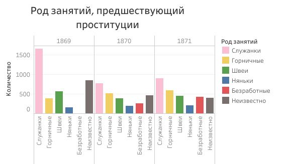
#история_проституции
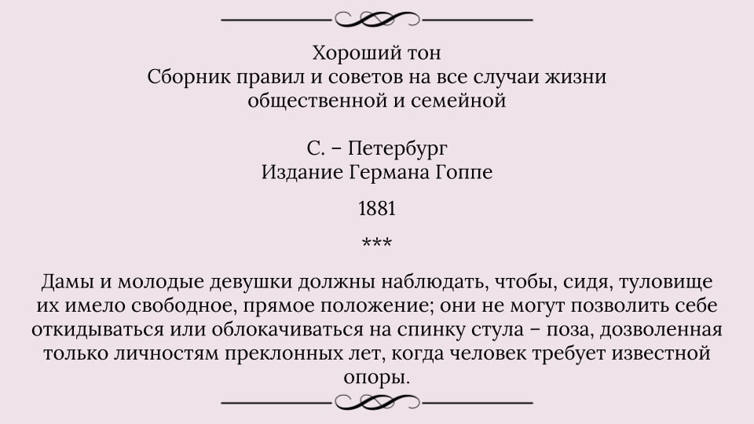
Ораниенбаум страшит
Ораниенбаум страшит
Ораниенбаум был любимой резиденцией Екатерины II и Петра III. Работники музея говорят, что до сих пор встречают призраков бывших владельцев в их любимых местах.
В одной из комнат Китайского дворца, преимущественно в окне, можно увидеть Екатерину Великую. Императрица склоняется над вышиванием и больше ей, собственно, ничего и не нужно. Она не предупреждает никого ни о чем, не ходит по коридорам, а лишь тихо вышивает в свое удовольствие. Вышивать Екатерина II любила и при жизни: “После обеда Екатерина несколько минут беседовала с приглашенными, затем все расходились. Екатерина садилась за пяльцы - она вышивала очень искусно, - а Бацкий читал ей вслух”.
В том же Китайском дворце, поговаривают, в своем личном кабинете часто замечают Петра III. В кабинете постоянно вещи передвигаются из одного места в другое, словно ими кто-то пользуется и по сей день. Чтобы не гневить Петра, музейные работники приняли решение, что при входе в кабинет необходимо здороваться с императором, и тогда он будет вести себя благонамеренного: “Здравствуйте, ваше величество. Извините, что мы вас побеспокоили”.
Андреева Ю.И. Призраки мрачного Петербурга, 2018.
Валишевский К. Роман императрицы. Екатерина II.
Андреева Ю.И. Призраки мрачного Петербурга, 2018.
Валишевский К. Роман императрицы. Екатерина II.
#призраки
#легенды
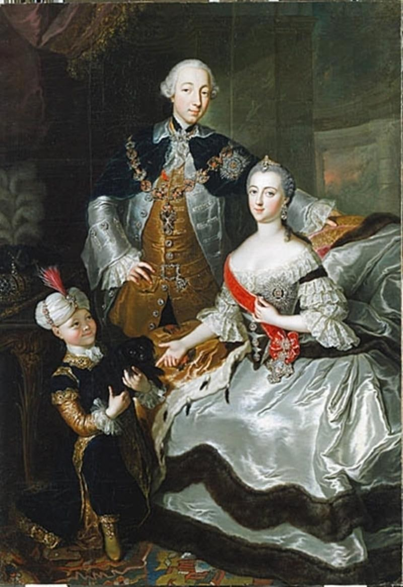
Никакой торговли детьми
Никакой торговли детьми
Обратимся к
истории «Тайного дома свиданий» - борделя премиум-класса, пользовавшегося огромной популярностью в начале XX века.
На первый взгляд, «Тайный дом свиданий» ничем не отличался от других элитных заведений полового сегмента: бархатные ковры, шелковые портьеры и дорогая обстановка комнат. Кроме того, нельзя не отметить удачное расположения сего заведения - на Итальянской улице, по соседству с «Пассажем».
Почему же именно «Тайный дом свиданий» стал объектом нашего пристального внимания? Дело в том, что данный «ресторан по утолению полового голода» был ярым нарушителем законодательства - свидания там устраивали с несовершеннолетними.
Скрывать свою нелегальную деятельность содержателям «Тайного дома свиданий», супругам фон В., удавалось целых 2 года - с 1909 года по 1911 год. В целях сохранения конфиденциальности в борделе еженедельно сменялась прислуга, а попасть в «дом свиданий» в качестве клиента можно было только по рекомендации.
Однако, несмотря на соблюдение строгих правил конспирации, в 1911 году полиция поймала всех фигурантов дела «с поличным» и сие заведение по «торговле детьми» было закрыто.
Глезеров С.Е. Закат блистательного Петербурга: быт и нравы северной столицы Серебряного века.
Глезеров С.Е. Закат блистательного Петербурга: быт и нравы северной столицы Серебряного века.
#история_проституции
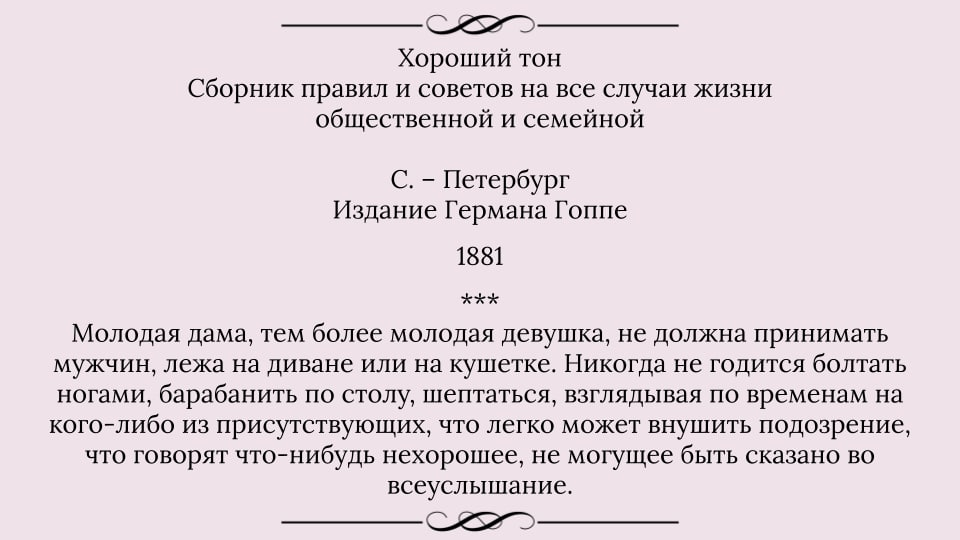
Уважение и верность
Уважение и верность
Анна Вырубова была ближайшей фрейлиной императорской семьи. Она лично знала Григория Распутина, который неоднократно встречался на ее даче в Царском Селе с императорской семьей. После смерти Григория, Анна охраняла его могилу от врагов, которые хотели отомстить ему даже после смерти.
Во время Первой мировой войны Анна вместе с императрицей и ее дочерьми стали сестрами милосердия. Анна участвовала во многих мероприятиях, направленных на помощь фронту.
Анна стала жертвой катастрофы на железной дороге, после которой она осталась инвалидом. Государство выплатило ей компенсацию, на которую Анна построила госпиталь.
После революции Анну обвинили в предательстве и шпионаже. Несмотря на это, после смерти Анну стали замечать в разных местах. Призрак Анны появлялся в разное время, но в один день в году он появлялся стабильно каждый год - в день рождения Николая II. Призрак Анны искал могилу царской семьи, но после захоронения предполагаемых останков императорской семьи призрак стал появляться реже или стал более незаметным.
Андреева Ю.И. Призраки мрачного Петербурга, 2018.
Андреева Ю.И. Призраки мрачного Петербурга, 2018.
#призраки
#легенды
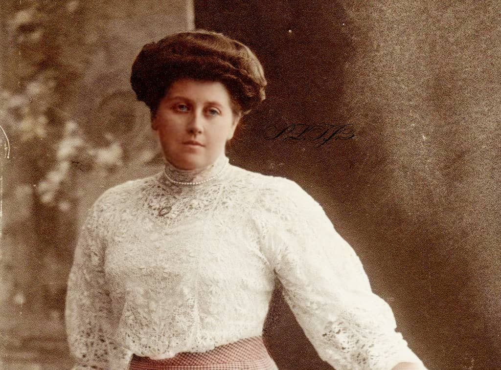
Структура порочного сообщества
Структура порочного сообщества
Проституция представляла собой явление неоднородное - жрицы любви классифицировались не только по цене, но и по своему юридическому статусу. Обратимся к
правовой классификации тружениц любовного поприща
.
Наиболее привилегированными считались обладательницы так называемого «желтого билета», заменяющего паспорт.
Билетные проститутки
находились на учете во врачебно-полицейском комитете, обязывались проходить регулярные медицинские осмотры и быть прикрепленными к конкретному публичному дому. Условия содержания девиц в публичных домах контролировались государством, а потому были весьма приличными.
Существовали также
бланковые проститутки
: так называли дам, которые изначально работали самостоятельно, но были пойманы в ходе облав и насильно поставлены на учет. Однако вместо билета они получали бланк. С одной стороны, бланк узаконивал индивидуальную деятельность жриц любви, с другой стороны накладывал значительные ограничения на их деятельность. К примеру, бланковым проституткам было запрещено появляться в центре города. Кроме того, не имея привязки к определенному публичному дому, бланковые проститутки были вынуждены самостоятельно искать клиентов и часто становились жертвами маньяков.
Нельзя обойти стороной и
тайных проституток
: этим жрицам любви удавалось заниматься своей деятельностью, не вставая на официальный учет.
Лебина Н. Б., Шкаровский М. В. Проституция в Петербурге (40-е гг. XIX в. — 40-е гг. XX в.).
Лебина Н. Б., Шкаровский М. В. Проституция в Петербурге (40-е гг. XIX в. — 40-е гг. XX в.).
#история_проституции
Общество защиты женского здоровья
Общество защиты женского здоровья
Отрицательное влияние модных тенденций на здоровье женщин — тема не только дня сегодняшнего.
В 1899 г. М. М. Волкова опубликовала книгу “Гигиена, красота и реформа женской одежды”, в которой приводилось описание губительного влияния на жизнь женщин.
Она задается вопросом, уместны ли некоторые правила внешнего вида в смысле удобства и гигиены. Под критику попали длинные и широкие юбки, шали в теплую погоду, узкие лифы, сковывающие движения и мешающие кровообращению.
Женский костюм являлся “обузой” и “стеснением”
“Возьмем барыню, одетую для прогулки, и разберем ее костюм. У нее надета шляпа с широкими причудливо изогнутыми полями. Тулья этой шляпы мала для головы ее обладательницы, цветов и всяких украшений - очень много. Шляпа эта, вследствие своей величины и несоответствия ее размеров с размерами головы, несмотря на шпильки, не может держаться на голове, и летит при малейшем ветре, при малейшем движении головы. Воткнутые в волосы шпильки рвут их, но шляпу удерживают с большим трудом, а то и вовсе удержать не могут.”
“Рукава длинны и узки, так что тоже стесняют движение рук и делают невозможным сколько нибудь значительные размахи ими. Конечно, манеры, вследствие этого делаются более выдержанными, солидными, но за то, сколько теряется грации, и насколько при этом ослабляется мускулатура, вынужденная к бездеятельности, и как все взятое вместе дурно сказывается на здоровье”.
Кристин Руан. Новое платье империи: История Российской модной индустрии.
М. М. Волкова “Гигиена, красота и реформа женской одежды”
Кристин Руан. Новое платье империи: История Российской модной индустрии.
М. М. Волкова “Гигиена, красота и реформа женской одежды”
#красота
#мода
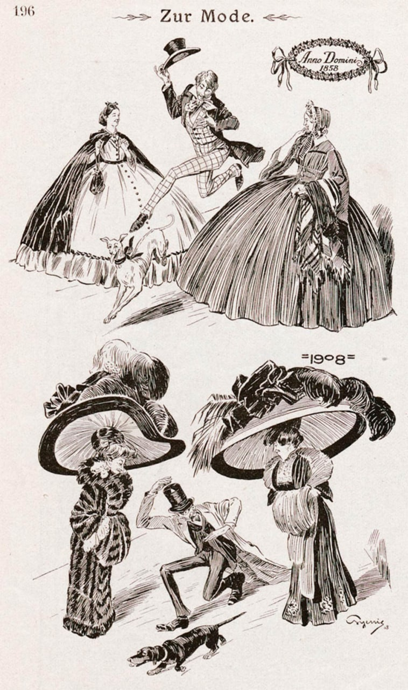
Свет мой зеркальце, скажи…
Свет мой зеркальце, скажи…
Мария Анна Аделаида Ленорман была известной прорицательницей и гадалкой. После победы над французами Александр I решил обратиться к мадам Ленорман, чтобы получить ответы на мучающие его вопросы.
Император попросил мадам Ленорман показать будущее своей семьи. В начале Александр в отражении видел лишь себя, но через некоторое время перед его глазами открылась совершенно другая картина. Зеркало показало ему как трон от него перешел брату Константину, но картинка быстро сменилась. Теперь на троне восседал брат Николай.
После этого изображения зеркало показало новое. Александр видел Сенатскую площадь, усеянную трупами. Были слышны выстрелы и крики людей, вокруг был хаос.
Пророчество мадам Ленорман действительно сбылось. После смерти Александра I престол перешел его брату Константину, однако тот отказался править, поэтому трон достался Николаю. Царствие Николая же началось с восстания декабристов.
Андреева Ю.И. Призраки мрачного Петербурга, 2018.
Андреева Ю.И. Призраки мрачного Петербурга, 2018.
#призраки
#легенды
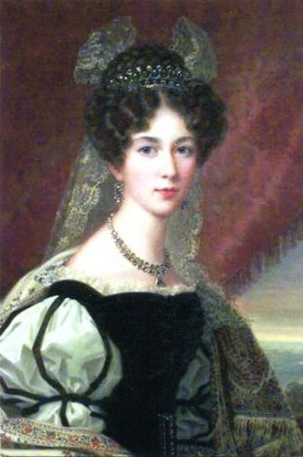
Падение нравственности
Падение нравственности
Сегодня мы хотим внести немного конкретики в наше повествование. Вашему вниманию представляются скорбные цифры, обнародованные Врачебно-полицейским комитетом.
Развитие института проституции в России с 1868 года по 1877 год
- налицо.
Михневич В.О. Язвы Петербурга.
Михневич В.О. Язвы Петербурга.
#история_проституции
Повальное безумие (К свержению ига мод)
Повальное безумие (К свержению ига мод)
Формирование модной индустрии и ее широкое распространение в Российской Империи и, в особенности, в Санкт-Петербурге, конечно же, вызывало в том числе негативную реакцию.
В книге Повальное безумие (К свержению ига мод) 1914 г. автор, Ю. Л. Елец, выразил большинство этих претензий и определил, к каким негативным последствиям приводит повальное увлечение модой.
- Одержимость модой и покупками разрушала моральную чистоту женщин., так как торговля - сфера, где царит жадность и корыстолюбие.
- Отдельную опасность представляют работницы модной сферы. Часто девушкам приходилось совмещать работу в магазине с работой в публичных домах, что негативно сказывалось на репутации даже тех, кто этого не делал.
- Владельцы магазинов также способствуют грехопадению и своими красочными витринами, и сладкими речами, уговаривающим приобрести тот или иной товар. Автор сообщает о случаях шантажа и обмана со стороны продавщиц.
Женщина, поддаваясь соблазну покупки, соблазняла этим также и мужчину, наряды способствовали порицаемой развязности и раскрепощенности.
Кристин Руан. Новое платье империи: История Российской модной индустрии.
Кристин Руан. Новое платье империи: История Российской модной индустрии.
#мода
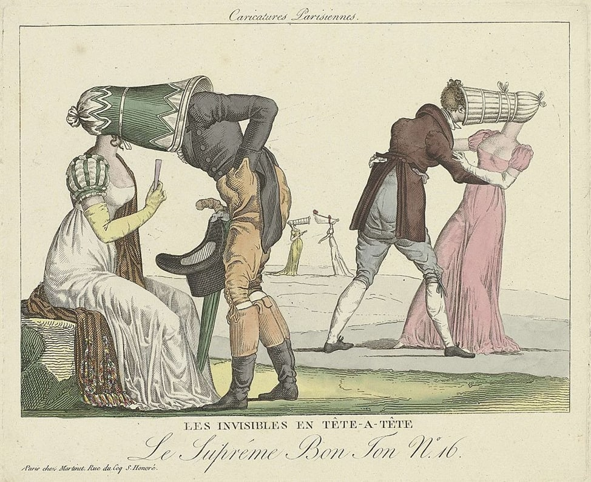
Что интересует тебя сегодня?
Что интересует тебя сегодня?
Направления и тематики салонов Петербурга менялись в зависимости от времени и интересов хозяина.
Оленин начинал свои встречи как как персона классицизма, как друг Державина и Львова, а его салон был театральным, так как он являлся директором императорских театров, и литературным как директора Публичной библиотеки. Но после, когда он стал директором Академии художеств, то его салоны стали посещать учащиеся живописных и архитектурных классов. В гостиной встречалось несколько литераторов и художников для того, чтобы занимать и оживлять разговор. Оленин стоял у истоков, был вдохновителем нового русского стиля.
С этим салоном соперничал кружок императрицы Екатерины Федоровны. Тут читал свои произведения и новинки литературы В.А. Жуковский, музицировали братья Виельгорские, пели фрейлины императрицы, часто устраивали танцы и светские игры - “пти же”.
Жерихина Е.И. Зимний сезон в салонах Петербурга, 2017.
Жерихина Е.И. Зимний сезон в салонах Петербурга, 2017.
#салоны
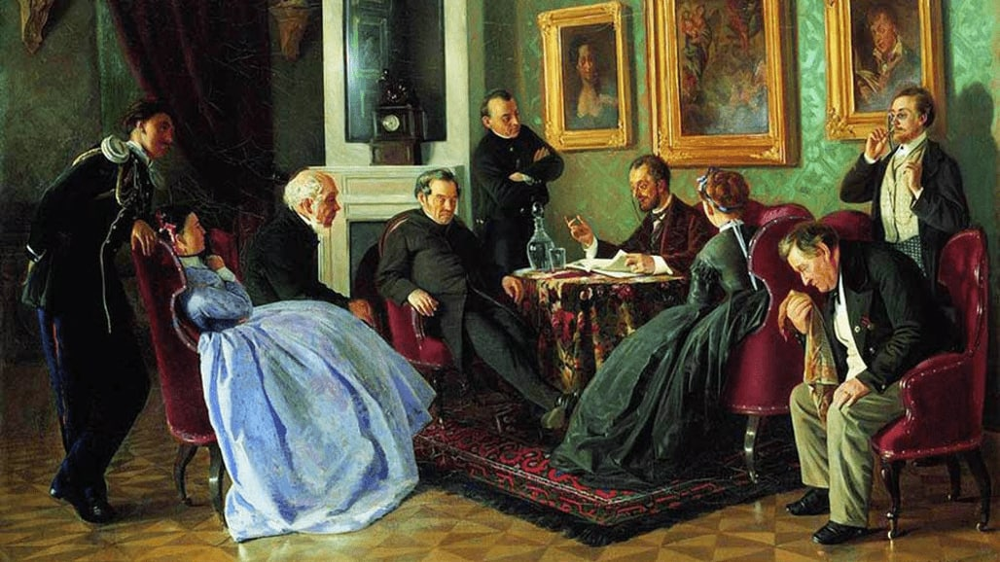
Цвет дискриминации - желтый
Цвет дискриминации - желтый
Несмотря на то, что билетные проститутки находились в выгодном положении с точки зрения доступа к медицинскому обслуживанию,
«желтый билет» наносил женщинам значительный нравственный ущерб
. После официальной регистрации во Врачебно-полицейском комитете проституткам взамен вида на жительство выдавался «желтый билет», который закреплял за дамой официальную принадлежность к институту проституции. В результате билетные проститутки не то что не могли скрыть свой род занятий, но и лишались возможности изменить место жительства и тем более профессиональное занятие. Вдобавок обладательницы «желтого билета», хоть и не нарушали законов, пользовались дурной славой - публичные женщины считались распространительницами дурных нравов, а их деятельность всячески порицалась общественностью. К примеру, в одном из писем во Врачебно-полицейский комитет возмущенный жалобщик ситуацию с проституцией в районе Кузнечного рынка описал так: «Противно смотреть даже низшему обществу и рабочему классу, а не то что аристократии».
Лебина Н. Б., Шкаровский М. В. Проституция в Петербурге (40-е гг. XIX в. — 40-е гг. XX в.).
Лебина Н. Б., Шкаровский М. В. Проституция в Петербурге (40-е гг. XIX в. — 40-е гг. XX в.).
#история_проституции
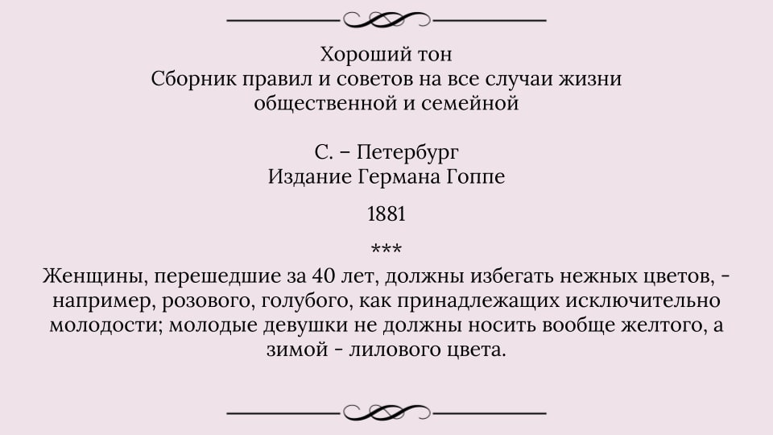
Из воспоминаний А.В. Старчевского “Дом Майковых”
Из воспоминаний А.В. Старчевского “Дом Майковых”
Старинная дворянская семья Майковых пестрела талантливыми и образованными представительницами. Евгения Петровна, Софья Михайловна и Екатерина Павловна занимались переводами, сочиняли собственные произведения и имели влияние в обсуждении работ своих товарищей.
“В семействе Майковых по вечерам в воскресенье и другие праздничные дни, когда собиралось много молодежи, часто происходили чтения чего-нибудь выдающегося в современной журналистике, с критическими и другими замечаниями, идущими к делу. Чтения эти введены были покойным Владимиром Андреевичем Солженицыным, но со смертью его чтения эти почти прекратились, как вдруг Иван Александрович Гончаров, написав свою “Обыкновенную историю”, заявил в один вечер, что прежде, чем отдать ее в печать, желал бы прочесть свое первое произведение у Майковых в несколько вечеров и выслушать замечания именно молодого, чуткого, откровенного и ничем не стесняющегося поколения; тем более, что все слушатели были его ближайшие друзья и доброжелатели, и если бы в чем-нибудь замечания их оказались неверны, то их тут же и опровергнут”.
Литературные салоны и кружки. Первая половина XiX века. Под ред. Н.Л. Бродского, 1930.
Литературные салоны и кружки. Первая половина XiX века. Под ред. Н.Л. Бродского, 1930.
#салоны
#литература
Высший свет продажной любви
Высший свет продажной любви
Помимо проституток «в законе», существовали и тайные проститутки, не стоящие на учете в государственных структурах. Несмотря на то, что тайные жрицы любви работали в теневом секторе любовного бизнеса, многие из них принадлежали к
«высшему аристократическому слою петербургских дам полусвета».
Итак, к высшим слоям свободных публичных женщин относились гетеры и авлетриды.
К
авлетридам
чаще всего принадлежали представительницы низших театральных слоев - хористки, танцовщицы и начинающие артистки. Стремясь продвинуться по карьерной лестнице, авлетриды не задумывались о способах достижения профессионального успеха и оказывались на грани профессиональной торговли собой. Связано это было с тем, что многие увеселительные заведения, желая усилить эффект от представлений, открывали специальные помещения, куда после выступлений зрители могли пригласить актрис с вполне определенной целью. Таким образом, авлетриды становились заложницами собственных профессиональных амбиций.
В отличие от авлетрид, цель
гетер
состояла не столько в оказании сексуальных услуг (которые они могли и вовсе не оказывать), сколько в создании «атмосферы высокой духовности и в то же время изысканно легкого эротизма». Гетеры, одаренные сочетанием красоты, образованности и свободомыслия, оказывали большое влияние на жизнь высших слоев общества и вели весьма аристократичный образ жизни. Ряды гетер в основном состояли из завсегдатаев модных салонов деятелей литературы и искусства. Одной из ярчайших представительниц петербургских гетер являлась З.Н. Гиппиус, которая, по словам современников, «кокетничала не только своей красотой, но и демонической литературной позицией».
Лебина Н. Б., Шкаровский М. В. Проституция в Петербурге (40-е гг. XIX в. — 40-е гг. XX в.).
Лебина Н. Б., Шкаровский М. В. Проституция в Петербурге (40-е гг. XIX в. — 40-е гг. XX в.).
#история_проституции
Особенности детского одевания
Особенности детского одевания
Как одевать свое дитя, если вы дама девятнадцатого века? Модные журналы подскажут и модные фасоны, и рекомендуемую длину платьев и юбок, и выкройки со схемами вышивки, чтобы смастерить наряды самой.
В шестидесятые годы девятнадцатого века самой популярной одеждой для девочки было белое платье, которое украшалось цветными лентами. «С двумя белыми платьями ребенок всегда хорошо одет». Верхнюю одежду шили из бархата, драпа или кашемира. По достижении определенного возраста, девочка надевала маленький кринолин.
Однако в следующем десятилетии он исчез. Сзади к юбкам крепили драпировки или широкие банты из лент. Длина платья изменялась в зависимости от возраста девочки: от короткого, такого, что виднелись панталончики, до длинного, взрослого, к шестнадцати годам.
Отличительной чертой платьев девочек была низкая талия, которая через десятилетия перекочевала и во взрослую женскую моду.
Восьмидесятые годы девятнадцатого века отмечаются борьбой с корсетом, который носили как девочки, так и взрослые дамы, что негативно сказывалось на их здоровье.
А. Васильев. Детская мода Российской империи.
А. Васильев. Детская мода Российской империи.
#мода
#детство
Белый - цвет предсказания
Белый - цвет предсказания
Слух о Белой Даме не раз ходил в стенах Аничкова дворца. Первым его владельцем стал Алексей Разумовский, который получил этот совершенно новый дворец в подарок. Призрак женщины в белых одеяниях появился в подвалах здания, но кем же была эта потусторонняя женщина, выяснить не удалось.
Второе явление Белой Дамы произошло чуть позже. Прохожие замечали, как в окнах Аничкова дворца полыхает пламя, а из окон выпрыгивает фигура, одетая в белый балахон.
После пожара в Зимнем дворце в Аничковом дворце поселился Николай I. Белая Дама даже решила побеседовать с государем, но от испуга Николай ничего не смог разобрать. После этого начал ходить слух о том, что призраком Белой Дамы является соблазненная Николаем смолянка, которая покончила с собой, утопившись в Фонтанке.
Белая Дама являлась и к Александру II, который имел с ней довольно продолжительную беседу, из которой узнал о всех трех покушениях, но не поверил в них.
Последний раз о Белой Даме упоминала Анна Вырубова, фрейлина царской семьи. Она утверждала, что Николай Александрович имел свидание с Белой Дамой. Дама сказала Николаю, что ему суждено быть последним российским самодержцем, но он ей не поверил.
Андреева Ю.И. Призраки мрачного Петербурга, 2018.
Андреева Ю.И. Призраки мрачного Петербурга, 2018.
#призраки
#легенды
Как порвать с торговлей любовью
Как порвать с торговлей любовью
Ведя разговор о дискриминации билетных проституток, мы неспроста уточнили, что обладательницы «желтого билета» лишались возможности смены места работы -
порвать с любовной индустрией можно было только по веским причинам
. Согласно одной из многочисленных инструкций Врачебно-полицейского комитета поводами для снятия женщины с учета могли служить:
1) болезнь,
2) возраст,
3) отъезд,
4) замужество,
5) требование опекуна,
6) поступление в богадельню или дом милосердия.
Лебина Н. Б., Шкаровский М. В. Проституция в Петербурге (40-е гг. XIX в. — 40-е гг. XX в.).
Лебина Н. Б., Шкаровский М. В. Проституция в Петербурге (40-е гг. XIX в. — 40-е гг. XX в.).
#история_проституции
О преимуществах корсета
О преимуществах корсета
“Сознаю вполне, что легче верблюду пройти сквозь игольное ушко, чем нашим дамам отказаться от корсета, в котором они находят, по-видимому, все достоинства и ни одного недостатка”
В защиту корсета они говорят следующее:
а) им в корсете теплее;
б) без корсета у них болит спина и им трудно держаться прямо;
в) без корсета полной даме быть невозможно, так как ее фигура выглядит тогда чересчур безобразно;
г) корсет их ничуть не стесняет;
д) на корсете удобнее носить юбки.
М. М. Волкова “Гигиена, красота и реформа женской одежды”
М. М. Волкова “Гигиена, красота и реформа женской одежды”
#красота
#мода
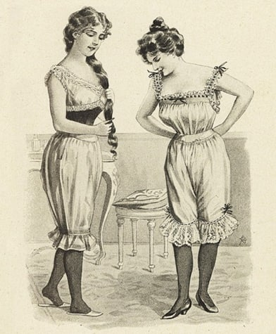
Княжна, определитесь!
Княжна, определитесь!
У К.Д. Флавицкого есть великолепная картина, на которой изображена немалоизвестная княжна Тараканова. Эта картина хранится в Третьяковской галерее, а за самой княжной тянется шлейф из тайн и легенд.
Одна из них появилась сразу после создания картины Флавицким. Эта легенда рассказывает о том, как княжна, назвавшая себя дочерью императрицы, погибла во время наводнения, когда была заперта в камере.
По другим данным княжна умерла от туберкулеза. Даже во время исповеди она не призналась в политических преступлениях.
Существует еще одна легенда. Она гласит о том, что после разговора с Екатериной II, княжна была пострижена в монахини и стала жить под именем Досифея в московском монастыре. По легенде, Досифея умерла собственной смертью через 25 лет от предполагаемой даты заточения в Петропавловской крепости.
До сих пор неизвестна точная информация по поводу жизни княжны Таракановой.
Еще во времена правления Екатерины II ходили слухи, что призрак княжны появлялся около Петропавловской крепости. Иногда княжна несла в руках ребенка, а иногда проклинала коварного Орлова.
Андреева Ю.И. Призраки мрачного Петербурга, 2018.
Андреева Ю.И. Призраки мрачного Петербурга, 2018.
#призраки
#легенды
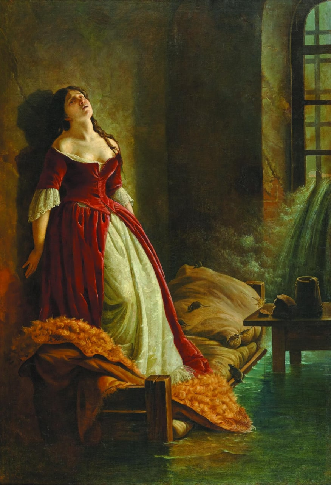
Вырваться из порочного омута
Вырваться из порочного омута
Итак, отправившись в дом милосердия, жрицы Венеры могли встать на «честный путь» и порвать с торговлей собой. Сегодня разберемся, как проходила
социальная реабилитация женщин, решивших завязать с развратом
.
Первый дом милосердия появился в Петербурге еще до легализации проституции и просуществовал до революции. Свою цель учреждение видело «в приучении к честному труду как несовершеннолетних девушек, уже впавших или находящихся в явной опасности впасть в порок вследствие нищеты или дурного сообщества, так и взрослых женщин, раскаявшихся в своей порочной жизни и желающих исправиться».
К сожалению, несмотря на высокие цели, дом милосердия оказался неэффективным. Проблема состояла в том, что принципы деятельности этой организации строились исключительно на христианской трактовке проблемы проституции и сводились к религиозно-нравственным беседам, обучению Закону Божьему и приобщению подопечных к домоводству. Однако по-настоящему решить проблему можно было только с учетом индивидуальных особенностей продажных женщин: крайне важно было отделить особ, вставших на путь разврата вследствие психических отклонений, от праздных дам, видящих в продажной любви способ избежать физического труда.
Лебина Н. Б., Шкаровский М. В. Проституция в Петербурге (40-е гг. XIX в. — 40-е гг. XX в.).
Лебина Н. Б., Шкаровский М. В. Проституция в Петербурге (40-е гг. XIX в. — 40-е гг. XX в.).
#история_проституции
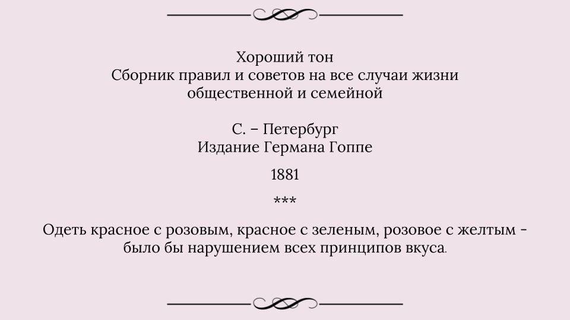
Белый платочек
Белый платочек
Одна из легенд старого Петербурга связана с именем одной из руководителей “Народной воли”, революционерки и террористки Софьи Перовской. Перовская руководила покушением на Александра II, она начертила план расстановки оружия и приняла решение лично стоять на мосту с белым платком в руке, чтобы подать сигнал И.И. Гриневецкому, при виде саней с императором. За это Софью Перовскую повесили на плацу Семеновского полка.
По легенде, призрак Перовской до сих появляется каждый март на крутом мостике Екатерининского канала. Петербург в это время темен, слышно завывание ветра, а деревья качаются возле фонарей, создавая мрачные тени. И так каждое 1 марта Софья Перовская стоит на мосту, и все вокруг ждет, чтобы она «сигнал подала, чтобы бомбу бросали под черные сани императора».
На кого же в следующий раз укажет призрак?
Андреева Ю.И. Призраки мрачного Петербурга, 2018.
Синдаловский Н.А. Призраки Северной столицы. Легенды и мифы питерского Зазеркалья, 2006.
Андреева Ю.И. Призраки мрачного Петербурга, 2018.
Синдаловский Н.А. Призраки Северной столицы. Легенды и мифы питерского Зазеркалья, 2006.
#призраки
#легенды
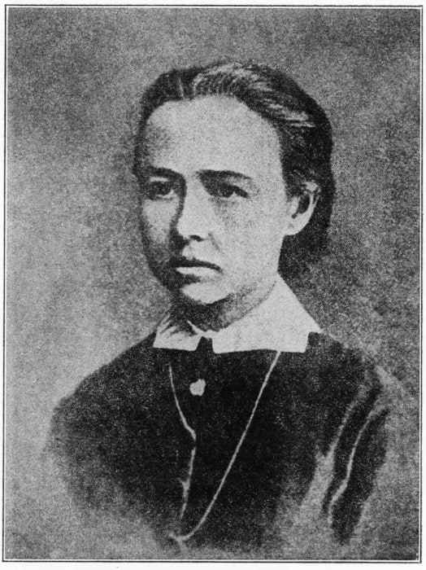
Региональный разврат
Региональный разврат
Сегодня мы предлагаем взглянуть на
статистику по количеству публичных домов в разных регионах России на 1889 год
.
Несложно заметить, что столицей разврата являлся вовсе не Санкт-Петербург - статус города соблазна в 1889 году принадлежал Москве.
Проституция: по обследованию 1-го августа 1889 года, Центр. стат. ком. М-ва внутр. дел.
Проституция: по обследованию 1-го августа 1889 года, Центр. стат. ком. М-ва внутр. дел.
#история_проституции

#история_проституции
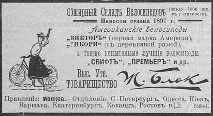
Не комсомолка, но красавица и спортсменка
Не комсомолка, но красавица и спортсменка
“Среди женского пола наблюдается сильное увлечение гимнастическими упражнениями”. В гимнастическом обществе Сокол принимали участие около 350 дам, большая часть которых — учащиеся женских заведений.
В качестве наездниц в начале XX в на ипподроме женщин не приветствовали, хотя они составляли большую часть публики. Петербург в этом смысле отставал от Москвы, где уже были случаи, когда дама взяла несколько призов в бегах.
Зимой большим успехом у дам пользовался конькобежный спорт, а впоследствии и фигурное катание. Много дам также состояли в кружке любителей лыжного спорта, но не участвовали в соревнованиях на скорость. Среди петербурженок были также знаменитые автомобилистки и авиаторши.
Глезеров С. Е. Модные увлечения блистательного Петербурга. Кумиры. Рекорды. Курьезы
Глезеров С. Е. Модные увлечения блистательного Петербурга. Кумиры. Рекорды. Курьезы
#увлечения
А голову ты дома не забыл?
А голову ты дома не забыл?
Кунсткамера наполнена огромным количеством разнообразных призраков. Например, музейные работники не раз замечали тени, которые перемещаются сами по себе или бронзовую кошку, которая как-то раз подмигнула нерадивому студенту, который из-за спора остался в одной из кладовых Кунсткамеры. Кошечка вызвала жуткий ажиотаж вокруг себя.
Существует легенда о призраке фрейлины Марии Гамильтон, которую Петр I приказал обезглавить после того, как узнал, что она умертвила трех своих детей и крала у него драгоценности. Голову Марии было приказано заспиртовать и отправить в Кунсткамеру. Через некоторое время голова исчезла. Спирт из банки тоже исчез. Вор спирта нашелся очень быстро. Им оказался сторож, который нашел оправдание в том, что несмотря на безграмотность, а человек он все-таки мудрый и знает, что спирт нельзя открытым оставлять. Оказался, как выяснилось, спасителем. А голову не видел.
В пропаже головы были обвинены английские моряки. Однако, они не признали свою вину. Через год же эти самые моряки привезли три головы неизвестных мужчин взамен пропавшей женской. Обмен сочли равноценным.
Андреева Ю.И. Призраки мрачного Петербурга, 2018.
Андреева Ю.И. Призраки мрачного Петербурга, 2018.
#призраки
#легенды
(Псевдо)ликвидация сексуальной коммерции
(Псевдо)ликвидация сексуальной коммерции
Советская власть положила конец официальной торговле любовью:
в рамках нового политического строя проституция уже не могла считаться профессией на государственном уровне. Но, несмотря на уничтожение системы государственного контроля за проституцией, искоренить древнейшую профессию не представлялось возможным.
В первые послереволюционные годы уровень проституции действительно снизился. Однако связано это было вовсе не с тем, что правительство провозгласило коммунизм могилой проституции: необходимость адаптации к новой форме государственного устройства, обесценивание денег в условиях военного коммунизма, массовая гибель мужского населения в ходе двух войн, перегруженность учебой, работой и обустройством нового быть сместили приоритеты населения с утоления полового голода на утоление обычного голода.
Уже в 1920-е годы жизнь вернулась в нормальное русло и, вопреки конфликту с законом,
продажная любовь возродилась
.
Лебина Н. Б., Шкаровский М. В. Проституция в Петербурге (40-е гг. XIX в. — 40-е гг. XX в.).
Лебина Н. Б., Шкаровский М. В. Проституция в Петербурге (40-е гг. XIX в. — 40-е гг. XX в.).
#история_проституции
Красота в баночках
Красота в баночках
Стандарты красоты, требующие от дам изменения того, что дала им природа, не могли быть достигнуты, конечно, без специальных косметических средств.
К врагам чистой кожи относились прыщи и покраснения, морщины, а также веснушки и загар.
Неудивительна популярность различных средств, как домашнего приготовления, так и продукции косметических лавок. Девушки стремились выбелить кожу, превратив ее почти в фарфоровую.
Домашние рецепты по уходу за кожей использовался лимонный сок и глицерин. Женщины готовили специальную воду для умывания, крема. Считалось также, что для кожи очень полезен (но не в больших количествах) свежий воздух.
Среди производителей косметики большей популярностью пользовались иностранные фирмы, рекламы которых можно было увидеть в женских журналах. Эти же журналы публиковали секреты красоты, а за отдельную плату предлагали раскрыть все тайны женской уборной
#красота
#косметика
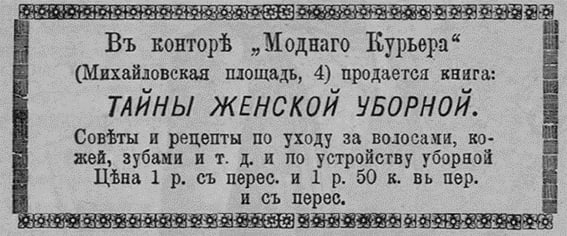
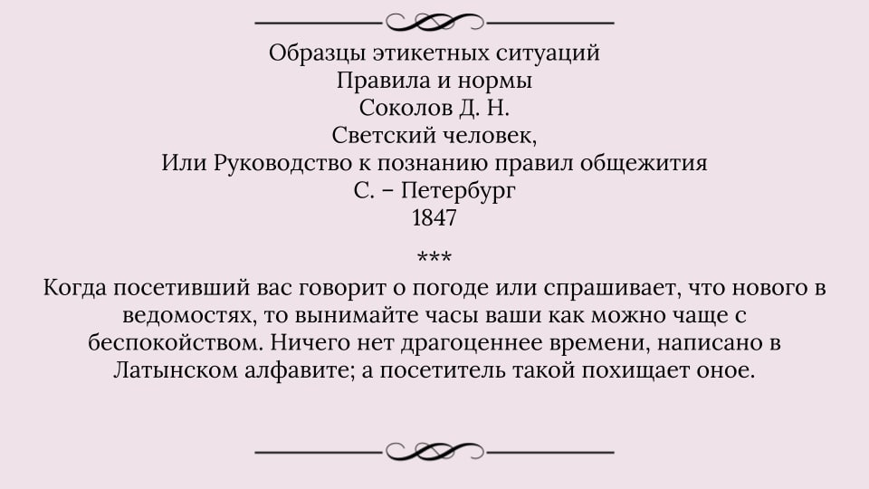